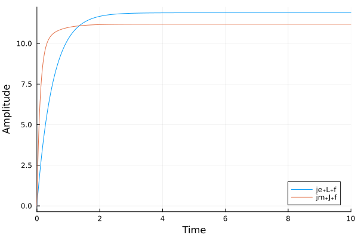
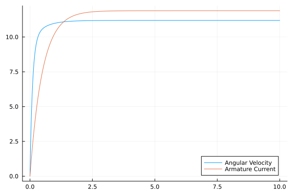
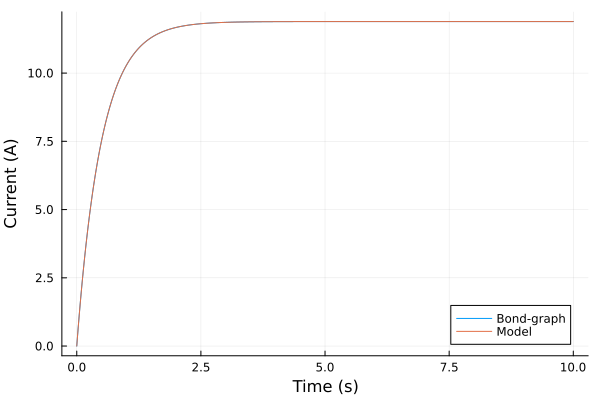
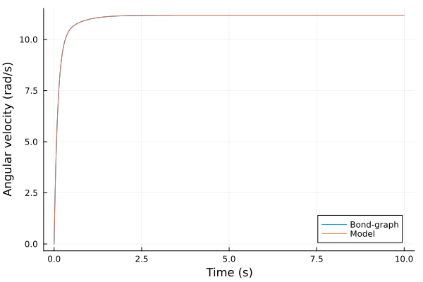

DC Motor
The source files for all examples can be found in /examples.
Introduction
The DC motor is a commonly used actuator that provides rotary motion to a mechanical system. It converts electrical energy into rotational mechanical energy, so its bond graph has an electrical and a mechanical part, coupled by a gyrator. The system can be represented as an equivalent circuit of the armature and the free-body diagram of the rotor illustrated below:

DC Motor model
We assumed that the rotor and shaft are rigid to model the DC motor coupled with a shaft. We also considered the shaft friction proportional to its angular velocity, representing a viscous friction model.
The torque generated by a DC motor is typically proportional to the armature current ($i$) and the strength of the magnetic field. However, we will assume a constant magnetic field for simplicity, resulting in the motor torque being proportional to the armature current. We represent this relationship using a constant factor $k_\tau$, which gives us the following equation:
\[\tau = k_\tau i\]
The back electromotive force generated by the motor torque is proportional to the angular velocity of the shaft ($\dot{\theta}$) through a constant factor $k_e$:
\[e = k_e \dot{\theta}\]
In SI units the torque constant ($k_\tau$) and the back-EMF constant ($k_e$) are equal, denoted as $k$: the motor converts power without storing or dissipating it, so $\tau\,\dot{\theta} = e\,i$. Karnopp, Margolis & Rosenberg (2012, §3.2, pp. 53–54) model such a coupling as a gyrator with a single coupling constant.
The shaft also carries an applied torque $\tau_a$, acting in the direction of positive rotation.
Finally, based on Newton's 2nd law and Kirchhoff's voltage law, we can derive the following governing equations for the system:
\[J\ddot{\theta} + c\,\dot{\theta} = k\,i + \tau_a,\]
\[L\frac{di}{dt} + R\,i = V - k\,\dot{\theta},\]
where $J$ represents the moment of inertia of the rotor, $c$ is the viscous friction coefficient, $L$ and $R$ are the armature inductance and resistance, respectively. By solving these equations, we can analyze the dynamic behavior of the DC motor and shaft system.
See also DC Motor Speed: System Modeling
Bond Graph Model
To model the DC motor depicted in the figure above, we can use the bond graph approach and represent the system with the following bond graph:

In this representation, the inertance elements (I) correspond to the moment of inertia of the rotor ($J$) in the mechanical domain and the armature inductance ($L$) in the electrical domain. The resistance elements (R) represent the viscous friction coefficient ($c$) in the mechanical domain and the armature resistance ($R$) in the electrical domain. The effort sources (Se) are the applied voltage ($V$) and the applied torque ($\tau_a$).
The gyrator (GY) describes the current–torque and speed–voltage relationships, with the motor constant $k$ as its modulus: $e_1 = k f_2$ and $e_2 = k f_1$ (Karnopp, Margolis & Rosenberg 2012, Eq. 3.11), that is, back EMF $e = k\dot{\theta}$ and motor torque $\tau = k i$.
Preliminary Steps
In this example we are going to first build and simulate the bond graph model for the DC motor. Then we are going to use the DC motor differential equations obtained based Newton's 2nd law and Kirchhoff's voltage law to compare the results.
Firstly, we import the bond-graph toolkit to model the system and OrdinaryDiffEqTsit5 to solve the resulting ODE. We also import ModelingToolkit's independent variable t and derivative D for the reference model at the end.
using BondGraphToolkit
using BondGraphToolkit.ModelingToolkit: t_nounits as t, D_nounits as D
using OrdinaryDiffEqTsit5
using PlotsSystem Element Definitions
The electrical side has the armature inductance (an inertia, I), its resistance (R) and the applied voltage (an effort source, Se):
@named L = Inertia(I = 0.5) # (H) Electric inductance
@named R = Resistance(R = 1.0) # (Ohm) Electric resistance
@named V = Se(12.0) # (V) Voltage\[ \begin{align} e\left( t \right) &= \mathtt{power.e}\left( t \right) \\ \mathtt{pout.e}\left( t \right) &= \mathtt{power.e}\left( t \right) \\ f\left( t \right) &= - \mathtt{pout.f}\left( t \right) + \mathtt{power.f}\left( t \right) \\ e\left( t \right) &= 12 \end{align} \]
The mechanical side has the shaft moment of inertia (J), its viscous friction (c) and an applied torque (τ):
@named J = Inertia(I = 0.01) # (kg⋅m^2) Shaft moment of inertia
@named c = Resistance(R = 0.1) # (N⋅m⋅s) Shaft viscous friction
@named τ = Se(1.0) # (N⋅m) Applied torque on the shaft, τₐ\[ \begin{align} e\left( t \right) &= \mathtt{power.e}\left( t \right) \\ \mathtt{pout.e}\left( t \right) &= \mathtt{power.e}\left( t \right) \\ f\left( t \right) &= - \mathtt{pout.f}\left( t \right) + \mathtt{power.f}\left( t \right) \\ e\left( t \right) &= 1 \end{align} \]
The motor constant $k$ is the gyrator modulus r: torque τ = r i and back EMF e = r ω, in N⋅m/A = V⋅s/rad.
r = 0.010.01Model Construction
Each side is a 1-junction: all its elements share one flow (current or angular velocity), and its efforts (voltages or torques) sum to zero. The sources' bonds point into the junction, away from the source (x => :pout), and the passive elements' bonds point out of the junction into the element (a bare member x), the usual orientations of Karnopp, Margolis & Rosenberg (2012, §3.1, pp. 39 and 49). So $V$ and $\tau_a$ enter each sum with a plus sign, and the R and I efforts with a minus sign.
The two junctions are bonded through the gyrator, so each gets a free port named gy. The electrical bond leaves its junction towards the gyrator (:gy) and the mechanical bond enters its junction from the gyrator (:gy => :in), following the power from the voltage source to the shaft. This is how Karnopp, Margolis & Rosenberg (2012, Fig. 2.3d, pp. 25–26) orient a motor: the armature bond points toward the motor and the shaft bond away from it. The back EMF therefore enters the electrical sum with a minus sign and the motor torque enters the mechanical sum with a plus sign, as in the hand-derived equations.
@named je = Junction1(V => :pout, R, L, :gy) # Electrical part
@named jm = Junction1(τ => :pout, c, J, :gy => :in) # Mechanical part\[ \begin{align} 0 &= \mathrm{connect}\left( \tau_{+}pout, core_{+}p1 \right) \\ 0 &= \mathrm{connect}\left( c_{+}power, core_{+}p2 \right) \\ 0 &= \mathrm{connect}\left( J_{+}power, core_{+}p3 \right) \\ 0 &= \mathrm{connect}\left( gy, core_{+}p4 \right) \\ - \mathtt{core.p2.f}\left( t \right) &= \mathtt{core.p1.f}\left( t \right) \\ - \mathtt{core.p3.f}\left( t \right) &= \mathtt{core.p1.f}\left( t \right) \\ \mathtt{core.p4.f}\left( t \right) &= \mathtt{core.p1.f}\left( t \right) \\ 0 &= \mathtt{core.p1.e}\left( t \right) - \mathtt{core.p2.e}\left( t \right) - \mathtt{core.p3.e}\left( t \right) + \mathtt{core.p4.e}\left( t \right) \\ \mathtt{\tau.e}\left( t \right) &= \mathtt{\tau.power.e}\left( t \right) \\ \mathtt{\tau.pout.e}\left( t \right) &= \mathtt{\tau.power.e}\left( t \right) \\ \mathtt{\tau.f}\left( t \right) &= - \mathtt{\tau.pout.f}\left( t \right) + \mathtt{\tau.power.f}\left( t \right) \\ \mathtt{\tau.e}\left( t \right) &= 1 \\ \mathtt{c.e}\left( t \right) &= \mathtt{c.power.e}\left( t \right) \\ \mathtt{c.pout.e}\left( t \right) &= \mathtt{c.power.e}\left( t \right) \\ \mathtt{c.f}\left( t \right) &= - \mathtt{c.pout.f}\left( t \right) + \mathtt{c.power.f}\left( t \right) \\ \mathtt{c.e}\left( t \right) &= \mathtt{c.R} ~ \mathtt{c.f}\left( t \right) \\ \frac{\mathrm{d}\mathtt{J.p}\left( t \right)}{\mathrm{d}t} &= \mathtt{J.e}\left( t \right) \\ \mathtt{J.e}\left( t \right) &= \mathtt{J.power.e}\left( t \right) \\ \mathtt{J.pout.e}\left( t \right) &= \mathtt{J.power.e}\left( t \right) \\ \mathtt{J.f}\left( t \right) &= - \mathtt{J.pout.f}\left( t \right) + \mathtt{J.power.f}\left( t \right) \\ \mathtt{J.f}\left( t \right) &= \frac{\mathtt{J.p}\left( t \right)}{\mathtt{J.I}} \end{align} \]
The gyrator's port 1 is the bond into it and port 2 the bond out of it, so the electrical free port connects to p1 and the mechanical one to p2.
@named gy = GY(r = r)
@named mdl = System([connect(je.gy, gy.p1), connect(gy.p2, jm.gy)], t; systems = [je, gy, jm])\[ \begin{align} 0 &= \mathrm{connect}\left( je_{+}gy, gy_{+}p1 \right) \\ 0 &= \mathrm{connect}\left( gy_{+}p2, jm_{+}gy \right) \\ 0 &= \mathrm{connect}\left( V_{+}pout, core_{+}p1 \right) \\ 0 &= \mathrm{connect}\left( R_{+}power, core_{+}p2 \right) \\ 0 &= \mathrm{connect}\left( L_{+}power, core_{+}p3 \right) \\ 0 &= \mathrm{connect}\left( gy, core_{+}p4 \right) \\ - \mathtt{je.core.p2.f}\left( t \right) &= \mathtt{je.core.p1.f}\left( t \right) \\ - \mathtt{je.core.p3.f}\left( t \right) &= \mathtt{je.core.p1.f}\left( t \right) \\ - \mathtt{je.core.p4.f}\left( t \right) &= \mathtt{je.core.p1.f}\left( t \right) \\ 0 &= \mathtt{je.core.p1.e}\left( t \right) - \mathtt{je.core.p2.e}\left( t \right) - \mathtt{je.core.p3.e}\left( t \right) - \mathtt{je.core.p4.e}\left( t \right) \\ \mathtt{je.V.e}\left( t \right) &= \mathtt{je.V.power.e}\left( t \right) \\ \mathtt{je.V.pout.e}\left( t \right) &= \mathtt{je.V.power.e}\left( t \right) \\ \mathtt{je.V.f}\left( t \right) &= - \mathtt{je.V.pout.f}\left( t \right) + \mathtt{je.V.power.f}\left( t \right) \\ \mathtt{je.V.e}\left( t \right) &= 12 \\ \mathtt{je.R.e}\left( t \right) &= \mathtt{je.R.power.e}\left( t \right) \\ \mathtt{je.R.pout.e}\left( t \right) &= \mathtt{je.R.power.e}\left( t \right) \\ \mathtt{je.R.f}\left( t \right) &= - \mathtt{je.R.pout.f}\left( t \right) + \mathtt{je.R.power.f}\left( t \right) \\ \mathtt{je.R.e}\left( t \right) &= \mathtt{je.R.R} ~ \mathtt{je.R.f}\left( t \right) \\ \frac{\mathrm{d}\mathtt{je.L.p}\left( t \right)}{\mathrm{d}t} &= \mathtt{je.L.e}\left( t \right) \\ \mathtt{je.L.e}\left( t \right) &= \mathtt{je.L.power.e}\left( t \right) \\ \mathtt{je.L.pout.e}\left( t \right) &= \mathtt{je.L.power.e}\left( t \right) \\ \mathtt{je.L.f}\left( t \right) &= - \mathtt{je.L.pout.f}\left( t \right) + \mathtt{je.L.power.f}\left( t \right) \\ \mathtt{je.L.f}\left( t \right) &= \frac{\mathtt{je.L.p}\left( t \right)}{\mathtt{je.L.I}} \\ \mathtt{gy.p1.e}\left( t \right) &= - \mathtt{gy.p2.f}\left( t \right) ~ \mathtt{gy.r} \\ \mathtt{gy.p2.e}\left( t \right) &= \mathtt{gy.p1.f}\left( t \right) ~ \mathtt{gy.r} \\ 0 &= \mathrm{connect}\left( \tau_{+}pout, core_{+}p1 \right) \\ 0 &= \mathrm{connect}\left( c_{+}power, core_{+}p2 \right) \\ 0 &= \mathrm{connect}\left( J_{+}power, core_{+}p3 \right) \\ 0 &= \mathrm{connect}\left( gy, core_{+}p4 \right) \\ - \mathtt{jm.core.p2.f}\left( t \right) &= \mathtt{jm.core.p1.f}\left( t \right) \\ - \mathtt{jm.core.p3.f}\left( t \right) &= \mathtt{jm.core.p1.f}\left( t \right) \\ \mathtt{jm.core.p4.f}\left( t \right) &= \mathtt{jm.core.p1.f}\left( t \right) \\ 0 &= \mathtt{jm.core.p1.e}\left( t \right) - \mathtt{jm.core.p2.e}\left( t \right) - \mathtt{jm.core.p3.e}\left( t \right) + \mathtt{jm.core.p4.e}\left( t \right) \\ \mathtt{jm.\tau.e}\left( t \right) &= \mathtt{jm.\tau.power.e}\left( t \right) \\ \mathtt{jm.\tau.pout.e}\left( t \right) &= \mathtt{jm.\tau.power.e}\left( t \right) \\ \mathtt{jm.\tau.f}\left( t \right) &= - \mathtt{jm.\tau.pout.f}\left( t \right) + \mathtt{jm.\tau.power.f}\left( t \right) \\ \mathtt{jm.\tau.e}\left( t \right) &= 1 \\ \mathtt{jm.c.e}\left( t \right) &= \mathtt{jm.c.power.e}\left( t \right) \\ \mathtt{jm.c.pout.e}\left( t \right) &= \mathtt{jm.c.power.e}\left( t \right) \\ \mathtt{jm.c.f}\left( t \right) &= - \mathtt{jm.c.pout.f}\left( t \right) + \mathtt{jm.c.power.f}\left( t \right) \\ \mathtt{jm.c.e}\left( t \right) &= \mathtt{jm.c.R} ~ \mathtt{jm.c.f}\left( t \right) \\ \frac{\mathrm{d}\mathtt{jm.J.p}\left( t \right)}{\mathrm{d}t} &= \mathtt{jm.J.e}\left( t \right) \\ \mathtt{jm.J.e}\left( t \right) &= \mathtt{jm.J.power.e}\left( t \right) \\ \mathtt{jm.J.pout.e}\left( t \right) &= \mathtt{jm.J.power.e}\left( t \right) \\ \mathtt{jm.J.f}\left( t \right) &= - \mathtt{jm.J.pout.f}\left( t \right) + \mathtt{jm.J.power.f}\left( t \right) \\ \mathtt{jm.J.f}\left( t \right) &= \frac{\mathtt{jm.J.p}\left( t \right)}{\mathtt{jm.J.I}} \end{align} \]
Analysing the model
mtkcompile reduces the model to its states: the momenta of the two inertias.
sys = mtkcompile(mdl)\[ \begin{align} \frac{\mathrm{d}\mathtt{jm.J.p}\left( t \right)}{\mathrm{d}t} &= \mathtt{jm.J.e}\left( t \right) \\ \frac{\mathrm{d}\mathtt{je.L.p}\left( t \right)}{\mathrm{d}t} &= \mathtt{je.L.e}\left( t \right) \end{align} \]
Print system states
unknowns(sys)2-element Vector{SymbolicUtils.BasicSymbolicImpl.var"typeof(BasicSymbolicImpl)"{SymReal}}:
jm₊J₊p(t)
je₊L₊p(t)Print system parameters
parameters(sys)5-element Vector{SymbolicUtils.BasicSymbolicImpl.var"typeof(BasicSymbolicImpl)"{SymReal}}:
je₊R₊R
je₊L₊I
gy₊r
jm₊c₊R
jm₊J₊IPrint the system's equations in terms of the states
full_equations(sys)\[ \begin{align} \frac{\mathrm{d}\mathtt{jm.J.p}\left( t \right)}{\mathrm{d}t} &= 1 + \frac{\mathtt{gy.r} ~ \mathtt{je.L.p}\left( t \right)}{\mathtt{je.L.I}} + \frac{ - \mathtt{jm.J.p}\left( t \right) ~ \mathtt{jm.c.R}}{\mathtt{jm.J.I}} \\ \frac{\mathrm{d}\mathtt{je.L.p}\left( t \right)}{\mathrm{d}t} &= 12 + \frac{ - \mathtt{gy.r} ~ \mathtt{jm.J.p}\left( t \right)}{\mathtt{jm.J.I}} + \frac{ - \mathtt{je.L.p}\left( t \right) ~ \mathtt{je.R.R}}{\mathtt{je.L.I}} \end{align} \]
Generated equations against the hand derivation
bgequations returns the same equations with the names we choose. The states are the momenta of the two inertias: the flux linkage of the inductance, $\lambda = L\,i$, and the angular momentum of the shaft, $h = J\dot{\theta}$. Here we rename them, and the parameters, to the symbols of the introduction (inside a let, so the names L, R, J and c keep pointing at the elements):
let
@variables λ(t) h(t)
@parameters L R J c k
bgequations(mdl; rename = Dict(je.L.p => λ, jm.J.p => h, je.L.I => L, je.R.R => R,
jm.J.I => J, jm.c.R => c, gy.r => k))
end\[ \begin{align} \frac{\mathrm{d}h\left( t \right)}{\mathrm{d}t} &= 1 + \frac{ - c ~ h\left( t \right)}{J} + \frac{k ~ \lambda\left( t \right)}{L} \\ \frac{\mathrm{d}\lambda\left( t \right)}{\mathrm{d}t} &= 12 + \frac{ - R ~ \lambda\left( t \right)}{L} + \frac{ - h\left( t \right) ~ k}{J} \end{align} \]
The constant sources appear as their values, $V = 12$ and $\tau_a = 1$. With $\lambda = L\,i$ and $h = J\dot{\theta}$, the equation for $\dot{\lambda}$ is $L\frac{di}{dt} = V - R\,i - k\,\dot{\theta}$ and the one for $\dot{h}$ is $J\ddot{\theta} = \tau_a + k\,i - c\,\dot{\theta}$: the two governing equations of the introduction.
System Simulations
Bond graph model
Define the simulation time
tspan = (0.0, 10.0)(0.0, 10.0)Generate an ODEProblem as for any ModelingToolkit model, passing the simulation interval.
prob = ODEProblem(sys, [], tspan)ODEProblem with uType Vector{Float64} and tType Float64. In-place: true
Initialization status: FULLY_DETERMINED
Non-trivial mass matrix: false
timespan: (0.0, 10.0)
u0: 2-element Vector{Float64}:
0.0
0.0Use solve to simulate the system. Tight tolerances let us compare it with the reference model at the end.
sol = solve(prob, Tsit5(), reltol = 1e-10, abstol = 1e-10)
plot(sol, idxs = [je.L.f, jm.J.f], xlabel = "Time", ylabel = "Amplitude")
DC motor model
First, we define the state variables of the DC motor system, which are $i$, $\theta$, and $\dot{\theta}$. They represent the armature current, shaft angle, and shaft angular velocity, respectively.
@variables i(t) = 0.0 # Armature current
@variables θ(t) = 0.0 # Shaft angle
@variables θ̇(t) = 0.0 # Shaft angular velocity\[ \begin{equation} \left[ \begin{array}{c} \mathtt{\dot{\theta}}\left( t \right) \\ \end{array} \right] \end{equation} \]
Then, we define the DC motor system parameters.
Lᵥ = 0.5 # (H) - Inductance
Rᵥ = 1.0 # (Ohm) - Resistance
Uᵥ = 12.0 # (V) - Voltage
Jᵥ = 0.01 # (kg*m²) - Moment of inertia of the rotor
bᵥ = 0.1 # (N*m*s) - Motor viscous friction constant
Tᵥ = 1.0 # (N*m) - Applied torque on the shaft1.0Define the differential equations that represent the governing equations of the system. They include the equation for shaft angular acceleration, armature current, and the derivative of the shaft angle.
eqs_t = [
Jᵥ * D(θ̇) ~ Tᵥ + r * i - bᵥ * θ̇, # Equation for shaft angular acceleration
Lᵥ * D(i) ~ -Rᵥ * i + Uᵥ - r * θ̇, # Equation for armature current
D(θ) ~ θ̇ # Equation for shaft angle derivative
]\[ \begin{align} 0.01 ~ \frac{\mathrm{d}\mathtt{\dot{\theta}}\left( t \right)}{\mathrm{d}t} &= 1 + 0.01 ~ i\left( t \right) - 0.1 ~ \mathtt{\dot{\theta}}\left( t \right) \\ 0.5 ~ \frac{\mathrm{d}i\left( t \right)}{\mathrm{d}t} &= 12 - i\left( t \right) - 0.01 ~ \mathtt{\dot{\theta}}\left( t \right) \\ \frac{\mathrm{d}\theta\left( t \right)}{\mathrm{d}t} &= \mathtt{\dot{\theta}}\left( t \right) \end{align} \]
Then, we use the equations defined above to create a System.
@named sys_t = System(eqs_t, t)\[ \begin{align} \frac{\mathrm{d}\theta\left( t \right)}{\mathrm{d}t} &= \mathtt{\dot{\theta}}\left( t \right) \\ 0.01 ~ \frac{\mathrm{d}\mathtt{\dot{\theta}}\left( t \right)}{\mathrm{d}t} &= 1 + 0.01 ~ i\left( t \right) - 0.1 ~ \mathtt{\dot{\theta}}\left( t \right) \\ 0.5 ~ \frac{\mathrm{d}i\left( t \right)}{\mathrm{d}t} &= 12 - i\left( t \right) - 0.01 ~ \mathtt{\dot{\theta}}\left( t \right) \end{align} \]
We compile the ODE with mtkcompile, as for the bond graph model.
sys_t = mtkcompile(sys_t)\[ \begin{align} \frac{\mathrm{d}\mathtt{\dot{\theta}}\left( t \right)}{\mathrm{d}t} &= \frac{-1 - 0.01 ~ i\left( t \right) + 0.1 ~ \mathtt{\dot{\theta}}\left( t \right)}{-0.01} \\ \frac{\mathrm{d}\theta\left( t \right)}{\mathrm{d}t} &= \mathtt{\dot{\theta}}\left( t \right) \\ \frac{\mathrm{d}i\left( t \right)}{\mathrm{d}t} &= \frac{-12 + i\left( t \right) + 0.01 ~ \mathtt{\dot{\theta}}\left( t \right)}{-0.5} \end{align} \]
Define the ODEProblem to simulate with the time span defined for the bond graph simulation.
prob_t = ODEProblem(sys_t, [], tspan)ODEProblem with uType Vector{Float64} and tType Float64. In-place: true
Initialization status: FULLY_DETERMINED
Non-trivial mass matrix: false
timespan: (0.0, 10.0)
u0: 3-element Vector{Float64}:
0.0
0.0
0.0Use solve to simulate the system, with the same tolerances.
sol_t = solve(prob_t, Tsit5(), reltol = 1e-10, abstol = 1e-10);Plot the results
plot(sol_t.t, sol_t[θ̇], label = "Angular Velocity")
plot!(sol_t.t, sol_t[i], label = "Armature Current")
Compare models
We will graphically compare the results obtained from the bond graph representation and the direct simulation of the system using the governing differential equations.
Electrical domain
plot(sol.t, sol[je.L.f], label = "Bond-graph", ylabel = "Current (A)")
plot!(sol_t.t, sol_t[i], label = "Model", xlabel = "Time (s)")
Mechanical domain
plot(sol.t, sol[jm.J.f], label = "Bond-graph", ylabel = "Angular velocity (rad/s)")
plot!(sol_t.t, sol_t[θ̇], label = "Model", xlabel = "Time (s)")
On a common time grid, the largest difference between the two models, in current and in angular velocity:
tgrid = range(tspan..., length = 1001)
(maximum(abs, sol(tgrid; idxs = je.L.f).u - sol_t(tgrid; idxs = i).u),
maximum(abs, sol(tgrid; idxs = jm.J.f).u - sol_t(tgrid; idxs = θ̇).u))(1.0950529372166784e-10, 5.357048138421305e-10)The bond graph model reproduces the hand-derived dynamics to the solver's tolerance.
This page was generated using Literate.jl.